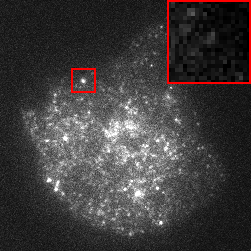
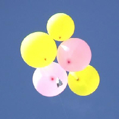
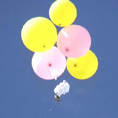
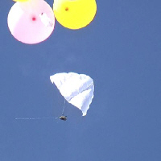
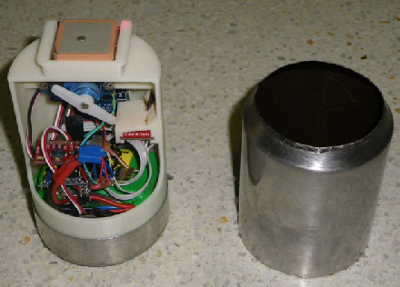

Interests
Astronomy
{kind=link}
I grew up as a star gazer and will never forget the first time I saw Saturn or the moons of Jupiter through a telescope. I cannot recall a time when I didn’t dream of galaxies. Although they are not strictly speaking my daily work, astronomy and physics have always been part of my daily life, and cosmology is my prime interest.
We live in an era in which we’ve never had access to so many and so spectacularly precise data, but never before has the scientific community been so aware of the gigantic amount of unknowns and inconsistencies! According to the “standard” model (Λ-CDM), all we are able to see amounts to 5% of the universe contents…
Working for major astronomy projects like Euclid or Lisa and seeing the enormous chasm between observations and theories is both scary and fascinating to me. For sure, we live in one of the most exciting centuries to care about cosmology!
Software Development

As a programmer for space missions Euclid and Lisa, I develop signal processing libraries in modern C++. My main activies in software development relate to profiling, optimization and parallelization, aiming at better efficiency. When developing libraries, I always focus on the user experience.
- Efficiency
Programmers generally measure computational performance by profiling well-known metrics like CPU time, RAM usage or IO waits. By contrast, metrics related to adaptability, scalability or CPU caching are directly related to the information throughput and infrastructure sizing, which are the actual two top-level points of interest. These metrics have in common that they relate to a ratio between the resources effectively used and the provided resources. This is what I term efficiency. Put another way, performance-oriented design aims at delivering a given result as fast as possible with unlimited resources, while efficiency-oriented design aims at delivering as many results as possible in a given (longer) time with limited resources. Efficiency is a key factor for both better performance and greener IT, and is fundamental in the frame of Big Data systems.
- Elegant APIs
C++ is known to be a verbose language full of boilerplate. Modern C++, i.e. since 2011, enables metaprogramming, and should be seen as a brand new language. It changes the way software is designed, e.g. thanks to mixins and compile-time computation, and the way interfaces are designed, e.g. through parameter forwarding and duck typing. Among others, briliant examples of such elegant APIs include the C++20 ranges library, Eigen or Niels Lohmann’s Json library. All in all, Modern C++ gives an opportunity to write more performant software with simpler interfaces. This is also true for more recent languages like Rust, which simplify the library development wrt. C++. As a developer of several C++ libraries, I like to deliver APIs which yield readable user code. Although the underlying design is generally complex, the user-level interfaces must feel natural. A few examples are displayed in Software, many more are available in my libraries documentations.
Cell Biology

As a PhD student with Inria (team Serpico), I have worked on the detection and estimation of dynamic events in image sequences. I focused on fluorescence microscopy image sequences.
- Spot Detection
To quantitatively analyze dynamic phenomena such as cell membrane dynamics, subcellular particles of interest have to be accurately detected. In 2014, we proposed ATLAS, a method enabling the segmentation of vesicles in fluorescence microscopy images. The segmentation stage amounts to thresholding the Laplacian of Gaussian (LoG) of the image. The optimal LoG scale is automatically selected in a scale-space framework, and the threshold is locally deduced from a user-specified probability of false alarm.
- Membrane Dynamics
Assessing the dynamics of plasma membrane events in live cell fluorescence microscopy is of paramount interest to understand cell mechanisms. In collaboration with UMR144, we have developed methods to detect vesicle fusion events, and then estimate the associated dynamics in image sequences of total internal reflection fluorescence microscopy (TIRFM). Various dynamic models (including translation, diffusion and dissociation) are tested to classify the dynamics of each detected event.
CanSat



During my engineering school years, I have developed, built and flown a dozen CanSats in various competitions, generally as the leader and software developer of ISAE’s team, BudStar.
{kind=link}

A CanSat is can-sized drone, which is fully autonomous and completes scientific missions. The CanSat is launched from a rocket or captive balloon at a height of a few hundred to a few thousand feet. Then, it must autonomously reach a ground target while probing the atmosphere and sending measurements to a ground station.
Five of our CanSat were presented at international events. Here is a brief overview of the team background.
BudStar achievements |
|
|---|---|
2009 |
1st Open CanSat Competition at C’Space, DGAEM, Biscarosse |
BudStar wins the first French competition, which is organized by the CNES and Planète Sciences. |
|
2010 |
2nd International CanSat Competition, Universidad Politécnica de Madrid |
LEEM and UPM organize the biggest CanSat competition in Europe. Fifteen nationalities are present. BudStar receives the gold medal. |
|
2010 |
Toulouse Space Show, Centre de Congrès Pierre Baudis, Toulouse |
As the laureate of the French competition, BudStar is invited by the CNES to present French CanSat activies at the show. |
|
2010 |
2nd Open CanSat Competition at C’Space, DGAEM, Biscarosse |
BudStar introduces the first rover CanSat fitted in the volume of a can. It is able to head on grass by applying different torques to two wheels. |
|
2011 |
3rd Open CanSat Competition at C’Space, DGAEM, Biscarosse |
Laureate of the competition organized by the CNES and Planète Sciences. |
|
2012 |
Soyuz-CanSat launch at C’Space, DGAEM, Biscarosse |
A dummy CanSat is launched from a Soyuz replica built by students of the Univeristy of Samara, Russia. The rocket makes a nominal flight and perfectly releases the CanSat. Both descend side-by-side under their respective parachute and land without being harmed. |
|
2012 |
ISAE Prize, ISAE, Toulouse |
The Soyuz-CanSat project is awarded by the ISAE Prize. |
|
Basset

Bassets are sausage-shaped dogs with oversized dangling leathers – not to be confused with the proud and tufted ears of the lynx. The most distinctive feature of a basset is definitely the shortness of its legs, which gave its name to the species (basset litteraly means short-legged in French). Combining the two features means it should be fairly easy for a basset to step on its own ears.